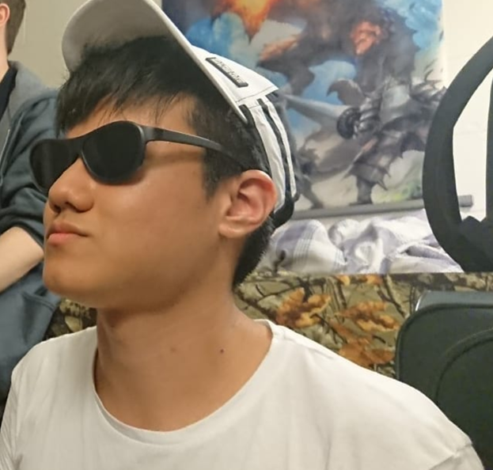

About Me
My name is Parawat and I'm currently a junior enrolled at UMass Amherst. I am a BDIC (International and Technical Writing)/English double major, with Anthropology and Japanese minors.
When not in school, I enjoy creative writing, reading, watching Netflix and other TV shows, and listening to music. My tentative goal out of college is to be hired as a technical writer, but I am open to working with whatever other opportunities life can offer me.